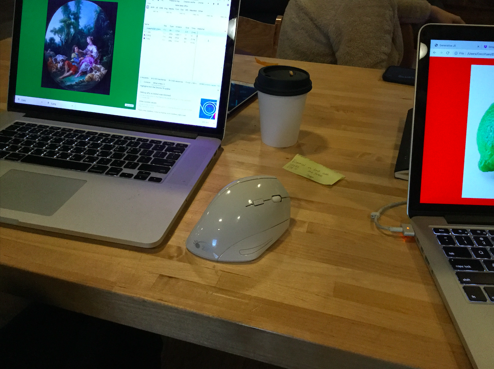

🍊 fruitful.school is an independently-run learning initiative for making “fruitful websites” founded in 2020 by Laurel Schwulst and John Provencher.
🍊❄️ for our inaugural winter 2020 workshop, 11 participants are self-publishing a piece to www which they developed over the course of 6 weeks.
🍊❄️ the winter 2020 workshop is meeting on sundays, noon–4pm at Pioneer Works in brooklyn, ny from jan 5–feb 9, 2020. the total cost per participant was $1200.00. financial aid (half priced spot) was given to two applicants.
🍊❄️ it's been a lot of fun! check out our blog, instagram, and arena as portals into our explorations...
🍊✨ for news about future fruitful workshops and happenings, please subscribe to our newsletter.
🍋 Well... what is a fruitful web?
🍋 A fruitful web requires seeds. We ask participants to apply with a proposal of their seed, their idea, their content to publish.
🍋 A fruitful web requires soil. good soil is a point of view, specific perspective, or story. Prior coding experience is a plus, but it’s not required for this workshop.
🍋 A fruitful web is handmade. By learning some basic html, we will build a website by hand. (+)
(–) “In today’s highly commercialized web of multinational corporations, proprietary applications, read-only devices, search algorithms, Content Management Systems, WYSIWYG editors, and digital publishers, it becomes an increasingly radical act to hand-code and self-publish experimental web art and writing projects.” — J.R. Carpenter
🍋 A fruitful web studies the histories and materiality of the web to understand “the web’s grain” and often works along with it.(+)
(–) “I believe every material has a grain, including the web. But this assumption flies in the face of our expectations for technology. Too often, the internet is cast as a wide-open, infinitely malleable material.” — Frank Chimero
🍋 A fruitful web is visually diverse. we like seeing things we've never seen before. We will learn how to add a presentation layer to our content with CSS.
🍋 A fruitful web flows and changes over time. We will learn basic JavaScript to seek generative opportunities.
🍋 A fruitful web aspires to be light, fast, and accessible. We will use only as much energy as we need to. We recognize websites are connected to limited physical resources.(+)
(–) “A couple years ago, I took a road trip from Wisconsin to Washington and mostly stayed in rural hotels on the way. I expected the internet in rural areas to be slow, but I was still surprised that a large fraction of the web was inaccessible. Some sites with lightweight styling were readable, but very few commercial websites were usable (other than Google).” —Dan Luu
🍋 A fruitful web can be written. Maybe you can build a text-only website.
🍋 A fruitful web can be a utility. Perhaps we can make tools for our daily lives.
🍋 A fruitful web can be performative. Maybe we can make sites with a purpose and life that’s brief but beautiful. (+)
(–) “Like theater, CSS is contextual. As a playwright, I know the actors are going to say the lines I wrote in the order I wrote them in the script. But when I write stage direction (like how I think the stage and actors should look and behave), they’re all suggestions. The production company will make their own decisions because they’re working with specific constraints.” —Miriam Suzanne
🍋 A fruitful web can be archival. Perhaps we plant the seed and let it grow, let it collect.
🍋 A fruitful web can be an alternative to corporate social media. Let’s evaluate what’s not working for us. (+)
(–) “Anyone can set up a web site and point to all the other web pages. Everyone is a publisher. Everyone is a peer. That’s why it’s called a web. Individuals knit themselves together by linking to one another. Everyone tends his or her own little epistemological garden, growing ideas from seed and sharing them with anyone who comes by.” —Paul Ford
🍒 Laurel Schwulst has been making websites since the year 2000. Her practice is called Beautiful Company, and she has taught at Yale, Rutgers, and California College of the Arts. Recently she released ambient travel app Flight Simulator.
🍒❄️ winter 2020 participants — Coco Yuan, Cindy Hoffman, Daniel Choi, Dawn Sinkowski, Gabriel Cisneros, Kyle Richardson, Maria Alyssa Stiller, Neeta Patel, Sangah Shin, Shannon McLean, Tommy Martinez
🍒❄️ special thanks to our winter 2020 helper, Ian Glover!
🥭❄️ winter 2020

Sangah's mouse
6 weeks
11 participants
meeting on Sundays, noon–4pm
at Pioneer Works, Brooklyn, NY
❄️ winter 2020 ❄️
Jan 5
fruitful welcome, nature of the web
1. structure (HTML)
Jan 12
fruitful portal
2. style (CSS)
Jan 19
3. feedback (CSS & JS)
Jan 26
4. generative (JS)
Feb 2
individual meetings
Feb 9
publishing to the web, happy hour!
🥭✨ future workshops to be announced, subscribe for updates
🍇 WHEN and where ARE CLASSES HELD? (+) (–) Pioneer Works in red hook, brooklyn. You can take the Ikea
ferry from Manhattan! Each session will be from noon–4PM on Sundays. The specific Sundays are Jan 5, Jan 12, Jan 19, Jan 26, and Feb 9.
🍇 Do I need any coding knowledge prior? (+) (–) No, but any prior knowledge is a plus.
🍇 What will we do during each session? (+) (–) Lectures, discussions, workshop, demos, exercises, critique and
guidance.
🍇 HOW MANY participants DO YOU ACCEPT? (+) (–) 12
🍇 How much does it cost? (+) (–) $1200 — with the exception of 2 half priced spots
🍇 CAN I TAKE THIS COURSE REMOTELY? (+) (–) No, we require you to physically be at each session.
🍇 why did you start this school? (+) (–) We love talking about, teaching and making websites! We’re hoping this can be a home to cultivate new ways of publishing to the www.
🍇 will there be future workshops or fruitful news? (+) (–) possibly, please stay tuned for updates. or let us know if you want us to come to your city.